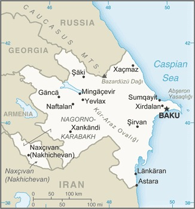

Genel Bilgiler
Azerbaycan, Güney Kafkasya’da yer alan üniter bir cumhuriyettir. Başkenti Bakü’dür. Yaklaşık 10 milyon nüfusa sahiptir. Resmî dili Azerbaycanca’dır ve para birimi Azerbaycan Manatı (AZN)’dır. Azerbaycan, Hazar Denizi’ndeki enerji kaynakları ve petrol-gaz ihracatı ile ekonomik olarak önemli bir ülkedir.
Azerbaycan, kuzeyde Rusya, kuzeybatıda Gürcistan, batıda Ermenistan ve Nahçıvan Özerk Bölgesi, güneyde İran ve doğuda Hazar Denizi ile çevrilidir. Yüzölçümü yaklaşık 86.600 km²’dir. Ülke coğrafyası dağlık ve düzlük alanlardan oluşur; önemli nehirleri Kura ve Aras’tır.
Başkent: Bakü
Kıta: Asya
Yüzölçümü: 86.600 km²
Nüfus (2025): 10.000.000

Bayrak Anlamı: Azerbaycan bayrağı yatay üç eşit şeritten oluşur: mavi, kırmızı ve yeşil; kırmızı şeridin ortasında beyaz ay ve sekiz köşeli yıldız bulunur. Mavi Türk kimliğini, kırmızı modernleşmeyi ve demokrasiyi, yeşil İslam’ı simgeler. Ay ve yıldız ulusal birliği ve kültürel mirası temsil eder. Bayrak 1918 yılında kabul edilmiştir.
Azerbaycan Haritası
Ekonomi
Azerbaycan ekonomisi enerji kaynaklarına dayanır; petrol ve doğal gaz ihracatı ekonominin temelini oluşturur. Tarım sektörü pamuk, buğday ve meyve üretimi ile öne çıkar. Sanayi sektöründe petrokimya, inşaat malzemeleri ve gıda işleme önemlidir. Hizmet sektörü finans, ticaret ve turizm alanlarında gelişmektedir. Ülke ayrıca enerji altyapısı ve boru hatları açısından stratejik bir konuma sahiptir.
| Yıl | İhracat (Milyar $) | İthalat (Milyar $) |
|---|---|---|
| 2019 | 15 | 10 |
| 2020 | 14 | 9 |
| 2021 | 18 | 12 |
| 2022 | 20 | 14 |
| 2023 | 22 | 15 |